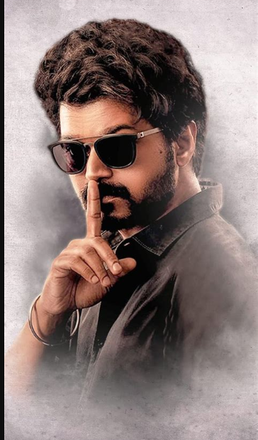

"Vijay (actor)" redirects here. For other actors named Vijay, see Vijay (name) § Film.
In this Tamil name, there is no surname or family name. The name Chandrasekaran is a patronym, and the person should be referred to by their given name, Joseph Vijay.
C. Joseph Vijay
Vijay in 2026
9th Chief Minister of Tamil Nadu
Incumbent
Assumed office
10 May 2026
Governor Rajendra Arlekar
Preceded by M. K. Stalin
Additional ministries
Member of the Tamil Nadu Legislative Assembly
Incumbent
Assumed office
4 May 2026
Preceded by R. D. Shekar
Constituency Perambur
President of the Tamilaga Vettri Kazhagam
Incumbent
Assumed office
2 February 2024
General Secretary N. Anand
Preceded by Office established
Personal details
Born Chandrasekaran Joseph Vijay
22 June 1974 (age 51)
Madras, India
Party Tamilaga Vettri Kazhagam
Spouse Sankgeetha Sornalingam
(m. 1999; sep. 2025)
Children 2
Parents
S. A. Chandrasekhar (father)
Shoba Chandrasekhar (mother)
Relatives Chandrasekhar family
Education Loyola College, Madras (dropped out)
Occupation
Politicianactor
Awards Full list
Chandrasekaran Joseph Vijay (born 22 June 1974) is an Indian politician and former actor who is currently
serving as the ninth chief minister of Tamil Nadu since May 2026. He is the founder and president of the political party Tamilaga Vettri Kazhagam (TVK).
Prior to entering politics, he was a leading actor in Tamil cinema and among the highest-paid actors in India, having won
numerous accolades including multiple Tamil Nadu State Film Awards and South Indian International Movie Awards.